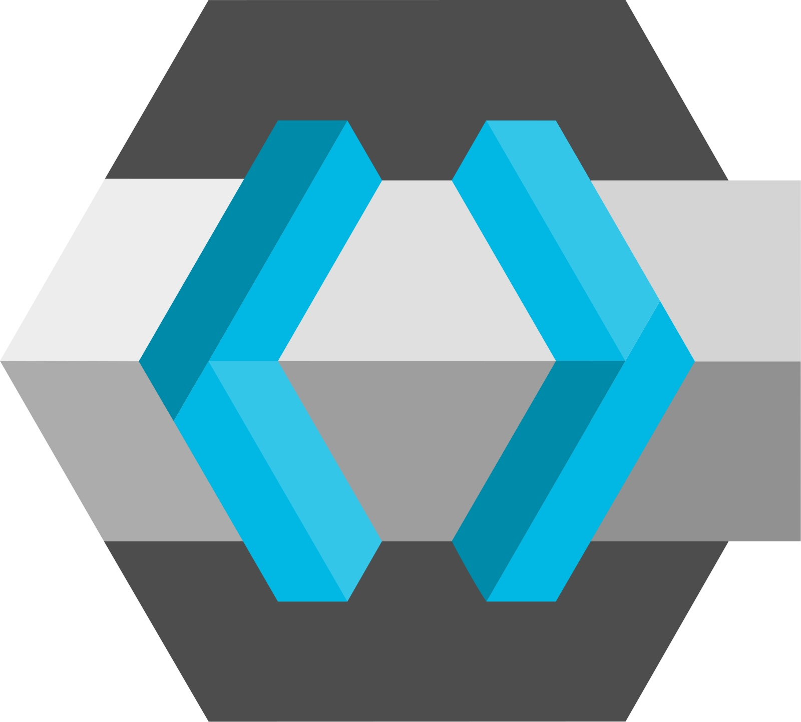

What Is Keycloak
Keycloak is an open-source identity and access management (IAM) solution. It provides single sign-on (SSO), social login, user federation, and role-based access control out of the box — speaking standard protocols like OIDC, OAuth 2.0, and SAML, so your applications don't have to build auth themselves.
What Is the Keycloak Operator
The Keycloak Operator is a Kubernetes controller that manages the full Keycloak lifecycle declaratively. You define a Keycloak custom resource (CR) in YAML — the operator watches it and creates, scales, and updates the actual Keycloak deployment to match what you declared.
Prerequisites
Before you start, you only need two things:
- Kubernetes cluster — a running cluster; any environment works (managed cloud or on-premises)
- kubectl — configured to talk to that cluster
Install the Keycloak Operator
The operator ships as plain Kubernetes manifests in the keycloak-k8s-resources repository. Apply the two custom resource definitions (CRDs) first, then the operator itself:
kubectl apply -f https://raw.githubusercontent.com/keycloak/keycloak-k8s-resources/26.3.3/kubernetes/keycloaks.k8s.keycloak.org-v1.yml
kubectl apply -f https://raw.githubusercontent.com/keycloak/keycloak-k8s-resources/26.3.3/kubernetes/keycloakrealmimports.k8s.keycloak.org-v1.yml
kubectl apply -f https://raw.githubusercontent.com/keycloak/keycloak-k8s-resources/26.3.3/kubernetes/kubernetes.yml
keycloaks.k8s.keycloak.org-v1.yml— the CRD for theKeycloakresource, which defines the Keycloak server instance itselfkeycloakrealmimports.k8s.keycloak.org-v1.yml— the CRD forKeycloakRealmImport, used to manage realms and clients declarativelykubernetes.yml— the operator deployment, its RBAC rules, and service account
Verify the operator is running in the keycloak-system namespace:
kubectl get pods -n keycloak-system
You should see the operator pod with a Running status. Once it's up, the operator is ready to reconcile your Keycloak custom resources.
Deploy Keycloak with the Keycloak CR
With the operator running, you define the Keycloak instance as a Keycloak custom resource. Here is the full example configuration this guide is built around — create the keycloak namespace and apply it:
kubectl create namespace keycloak
apiVersion: k8s.keycloak.org/v2alpha1
kind: Keycloak
metadata:
name: keycloak
namespace: keycloak
labels:
app: keycloak
spec:
ingress:
enabled: false
http:
httpEnabled: true
hostname:
hostname: keycloak.example.com
proxy:
headers: xforwarded
additionalOptions:
- name: proxy
value: edge # assumes TLS is terminated upstream (ingress/load balancer)
- name: hostname-strict
value: "false" # allow requests to the hostname over both HTTP and HTTPS
- name: log-console-output
value: json # structured JSON logs for easier aggregation
- name: metrics-enabled
value: "true" # expose Prometheus metrics from the Keycloak server
- name: event-metrics-user-enabled
value: "true" # add login/registration metrics per user event
- name: cache
value: ispn # use the embedded Infinispan cache
- name: cache-stack
value: kubernetes # Infinispan discovers peers via Kubernetes DNS
- name: db-pool-initial-size
value: "100" # initial JDBC connection pool size
- name: db-pool-min-size
value: "100" # minimum JDBC connection pool size
- name: db-pool-max-size
value: "200" # maximum JDBC connection pool size
db:
vendor: postgres
url: jdbc:postgresql://postgres:5432/keycloak
usernameSecret:
name: keycloak-db-secret
key: username
passwordSecret:
name: keycloak-db-secret
key: password
image: quay.io/keycloak/keycloak:26.0
startOptimized: false
instances: 5
resources:
requests:
cpu: "1"
memory: "1Gi"
limits:
cpu: "4"
memory: "4Gi"
unsupported:
podTemplate:
spec:
containers:
- name: keycloak
env:
- name: JAVA_OPTS_APPEND
value: "-Djgroups.dns.query=keycloak-discovery.keycloak.svc.cluster.local" # tell JGroups how to discover cluster peers via DNS
hostNetwork: false # keep pods isolated on the Kubernetes network
affinity:
podAntiAffinity:
requiredDuringSchedulingIgnoredDuringExecution:
- labelSelector:
matchLabels:
app: keycloak
topologyKey: "kubernetes.io/hostname" # spread Keycloak pods across different nodes
nodeSelector:
node-type: "keycloak"
tolerations:
- key: "node-type"
operator: "Equal"
value: "keycloak"
effect: "PreferNoSchedule"
The operator reads this spec and creates the underlying StatefulSet, services, and secrets to match. We'll walk through what each section does — and why this setup is highly available — next.
Why This Configuration Is High Availability
At a glance, the operator turns the Keycloak CR into one StatefulSet with 5 replicas. All 5 pods share two things: an Infinispan distributed cache for session data and a shared PostgreSQL database:
flowchart TB
Op["Keycloak Operator"] --> CR["Keycloak CR — instances: 5"]
CR --> SS["StatefulSet (5 replicas)"]
SS --> P1["Keycloak Pod 1"]
SS --> P2["Keycloak Pod 2"]
SS --> P3["Keycloak Pod 3"]
SS --> P4["Keycloak Pod 4"]
SS --> P5["Keycloak Pod 5"]
P1 <--> CACHE["Infinispan Cache (ISPN)"]
P2 <--> CACHE
P3 <--> CACHE
P4 <--> CACHE
P5 <--> CACHE
P1 --> DB[("PostgreSQL")]
P2 --> DB
P3 --> DB
P4 --> DB
P5 --> DB
Instances: 5
instances: 5 tells the operator to run 5 Keycloak replicas. If one pod crashes, restarts, or its node goes away, the remaining 4 keep serving traffic while the StatefulSet brings the replacement back. That is the core of the HA story — no single Keycloak pod is a point of failure.
Infinispan Distributed Cache
Sessions are the hard part. If each pod kept sessions only in its own memory, a failed pod would log out its users. The cache: ispn and cache-stack: kubernetes options enable the embedded Infinispan cache using the Kubernetes stack, which lets the pods discover each other and replicate session data across the cluster. When a user's session is stored on pod 1 and that pod dies, pod 2 still has it.
The JAVA_OPTS_APPEND environment variable makes this work under the hood:
- name: JAVA_OPTS_APPEND
value: "-Djgroups.dns.query=keycloak-discovery.keycloak.svc.cluster.local"
JGroups is the cluster communication library Infinispan uses. This setting tells it to discover peers by resolving the DNS name keycloak-discovery in the keycloak namespace — the Kubernetes headless service the operator creates. Each pod asks DNS, finds the other 4, and joins the distributed cache.
Pod Anti-Affinity
affinity:
podAntiAffinity:
requiredDuringSchedulingIgnoredDuringExecution:
- labelSelector:
matchLabels:
app: keycloak
topologyKey: "kubernetes.io/hostname"
This rule prevents two Keycloak pods from landing on the same node. If a node fails, at most one Keycloak pod goes with it — the other 4 are already running elsewhere and keep serving. Combined with the node selector and toleration below, pods are pinned to dedicated keycloak nodes, one per node:
nodeSelector:
node-type: "keycloak"
tolerations:
- key: "node-type"
operator: "Equal"
value: "keycloak"
effect: "PreferNoSchedule"
Connection Pool Tuning
With 5 instances sharing one database, the connection pool matters:
db-pool-min-size: 100/db-pool-initial-size: 100— keep 100 connections warm so burst traffic never waits on a new connectiondb-pool-max-size: 200— cap total connections so the database isn't overwhelmed when all 5 instances spike at once
Expose Keycloak with an NGINX Ingress
The Keycloak CR disables its own ingress (ingress.enabled: false) and enables HTTP (http.httpEnabled: true), so traffic enters through an ingress controller instead — here, NGINX Ingress. TLS terminates at the ingress, which is why the CR sets proxy: edge and hostname-strict: false:
apiVersion: networking.k8s.io/v1
kind: Ingress
metadata:
name: keycloak
namespace: keycloak
annotations:
nginx.ingress.kubernetes.io/force-ssl-redirect: "true"
nginx.ingress.kubernetes.io/ssl-redirect: "true"
nginx.ingress.kubernetes.io/backend-protocol: "HTTP"
nginx.ingress.kubernetes.io/x-forwarded-prefix: "/"
nginx.ingress.kubernetes.io/affinity: "cookie"
nginx.ingress.kubernetes.io/session-cookie-name: "KEYCLOAK_SESSION"
nginx.ingress.kubernetes.io/session-cookie-hash: "sha1"
nginx.ingress.kubernetes.io/proxy-read-timeout: "120"
nginx.ingress.kubernetes.io/proxy-send-timeout: "120"
nginx.ingress.kubernetes.io/proxy-connect-timeout: "30"
spec:
ingressClassName: nginx
tls:
- hosts:
- keycloak.example.com
secretName: keycloak-tls-secret
rules:
- host: keycloak.example.com
http:
paths:
- path: /
pathType: Prefix
backend:
service:
name: keycloak-service
port:
number: 8080
A few things worth noting:
backend-protocol: HTTP— matches the CR'shttpEnabled: true; the operator's service (keycloak-service) listens on port 8080, and the ingress talks to it over plain HTTP because TLS is already terminated in frontssl-redirect/force-ssl-redirect— every request is upgraded to HTTPS, which is whatproxy: edgeassumes- Cookie affinity (
affinity: cookie,session-cookie-name) — sticks a client's requests to the same Keycloak pod where possible, which pairs well with the Infinispan session cache - Timeout annotations — longer
proxy-read/proxy-sendtimeouts (120s) so slow token or import requests don't get cut off by the ingress default
Traefik Ingress Example
If you use Traefik, the equivalent is an IngressRoute with a redirect middleware. First the middleware that forces HTTPS, then a route on the websecure entry point with TLS and cookie stickiness:
apiVersion: traefik.io/v1alpha1
kind: Middleware
metadata:
name: keycloak-redirect-https
namespace: keycloak
spec:
redirectScheme:
scheme: https
---
apiVersion: traefik.io/v1alpha1
kind: IngressRoute
metadata:
name: keycloak
namespace: keycloak
spec:
entryPoints:
- web
routes:
- match: Host(`keycloak.example.com`)
kind: Rule
middlewares:
- name: keycloak-redirect-https
services:
- name: keycloak-service
port: 8080
---
apiVersion: traefik.io/v1alpha1
kind: IngressRoute
metadata:
name: keycloak
namespace: keycloak
spec:
entryPoints:
- websecure
tls:
secretName: keycloak-tls-secret
routes:
- match: Host(`keycloak.example.com`)
kind: Rule
services:
- name: keycloak-service
port: 8080
sticky:
cookie:
name: KEYCLOAK_SESSION
httpOnly: true
The web entry point only redirects to HTTPS, while websecure serves the actual traffic with TLS and session cookie stickiness — the same behavior as the NGINX annotations above. Traefik's sticky.cookie replaces nginx.ingress.kubernetes.io/affinity: cookie.